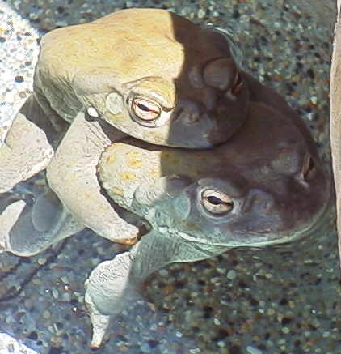

The Sonoran Desert Toad
The Sonoran Desert ToadThe Sonoran Desert Toad
Bufo alvarius
I cannot tell by what logic we call a toad, a bear, or an elephant ugly; they being created in those outward shapes and figures which best express the actions of their inward frames; and having passed that general visitation of God, who saw that all that he had made was good. Sir Thomas Browne, 1642.
In the early to mid 1800's, the children of Europe began their Manifest Destiny westward from the eastern United States. During this time, the Smithsonian Institution dispatched exploring expeditions to survey the land and its creature inhabitants. One of those early explorers was Major G. H. Thomas. In 1855, he became the first white man to discover and collect a specimen of our beloved toad. (USNM No. 2572) However, it wasn't until 1859 that a Frenchman by the name of Charles F. Girard, while working on the US and Mexican Boundary Survey, became the first white man to catalog and give this toad its official scientific name; Bufo alvarius. Because Major Thomas found his toad in Old Fort Yuma, California, across the Colorado River from Yuma, Arizona, (near the junction with the Gila River,) the toad was commonly referred to later as the Colorado River toad. Today, we commonly refer to B. alvarius as the Sonoran Desert toad to reflect the fact that it occurs almost exclusively in the region of the Sonoran Desert.
The Latin for "alvus" is the womb or belly. And the Latin for "arius" is belonging to. Bufo alvarius belongs to the womb. Older than the dinosaurs, she is a Divinity, the great primeval Earth Mother, the source and the end of all life. Of the more than 260 toads inhabiting planet Earth, there is none other like her. For in her venom glands is contained a magic substance that when dried and smoked induces a psychedelic near-death experience of great intensity, but of short duration.
The Sonoran Desert toad occurs in lowland areas of southern Arizona and adjacent corners of southeastern California, southwestern New Mexico and northeastern Baja, California, through most of Sonora, and into Sinaloa, Mexico. See the distribution map here. These toads are found mainly in the Lower Sonoran Life Zone, but also occur in the Upper Sonoran, ranging from about sea level to 5300 feet. They occur primarily in desert, but also in grassland and lower oak-woodland, commonly taking refuge in rodent burrows.
As is true of most toads, B. alvarius is nocturnal. Many of these toads spend a large part of their lives entombed in the Earth. The arrival of the monsoon rains in summer softens the ground and brings them out of aestivation (toad hibernation.) One study discovered that the majority of the B. alvarius toad population only comes out of aestivation when there are repeated "significant rainfall events" which are defined as greater than one inch of rainfall within a twenty-four hour period. However, some B. alvarius are not dependant on the whims of Mother Nature to provide the monsoon rains for their appearance. They have adapted well to life around people, (our night time lights attract a hardy meal,) and they obviously do not bury themselves underground, but possibly find refuge under man-made structures that allow for easier access in and out of their abodes. Consequently, one may find these toads feeding at night any time between May and September. Still, the largest number of B. alvarius will always be found after much heavy rainfall where they will breed in temporary pools, cattle ponds, and slow moving streams. Eggs (view pictures here) are deposited in long (400 inches) ropelike strings, 7,500 to 8,000 at a time. In Arizona, the monsoon rains occur mostly around July, give or take a month. Learn more about the unique weather pattern of the monsoon, and how to track it, here.
The Sonoran Desert toad is the largest of the western toads and is extremely fast when it decides to make a getaway - it doesn't hop, it gallops! Adults may attain a snout-vent length of up to seven inches. The skin is generally smooth, especially for a toad, but with small scattered warts. The color varies from dark brown, gray, olive-green, bright-green, and yellow-orange on the dorsal side, and mostly cream-colored on its ventral side. There is at least one large round, whitish tubercle at each corner of the mouth. The parotoids, above and behind the tympanums (eardrums,) are long and somewhat kidney-shaped, and venom glands also occur on the hind legs and usually on the forearms as well. The cranial crests are prominent and crescent-shaped. The irises are rust-colored. See the images from around the Internet or see the Photo Gallery.

Amplexus is the mating embrace of frogs and toads. The male clasps the female from behind. The sexes can be distinguished by the dark nuptial pads on the thumbs and inner fingers of the male; the thumb is larger than that of the female. Also, in general, males will cluck incessantly when picked up - this is the male release call. Females are generally silent but tend to puff and inflate their bodies with air when picked up. (The toad's skin is permeable and sensitive to toxins, so be careful that your hands are clean if you are going to handle toads.)
Sonoran Desert toads have voracious appetites and will eat any living thing they can get into their mouths. All manner of insect, beetles, grasshoppers, spiders, small lizards, scorpions, centipedes, mice, and smaller toads are just some examples of what B. alvarius will eat.
The call of B. alvarius has been described as weak for its size. You can hear this for yourself:
Click on this speaker  to hear the advertisement call
(4502KB
wav file)
to hear the advertisement call
(4502KB
wav file)
Click on this speaker  to hear the advertisement call (42.7K
ram file)
to hear the advertisement call (42.7K
ram file)
Click
for more information on the sources of these two recordings.
Click on this speaker  to hear the male release call
with some silliness (271KB wav file)
to hear the male release call
with some silliness (271KB wav file)
Discover Bufo alvarius in the wild.
Care sheet for keeping these toads in captivity.
Information regarding breeding.
Toad Poisoning - Keep your cats and dogs away from this toad!
Two scientists document Bufo alvarius defensive behavior against a skunk. These toads are intelligent and brave!
Journal Abstracts of Scientific Studies
LINKS:
AmphibiaWeb quickly search and retrieve information relating to amphibian biology, taxonomic information, species descriptions, life history information, conservation status, literature references, photos and range maps.
Biota Information System Of New Mexico - BISON - contains accounts for all vertebrate and many invertebrate species of wildlife occurring in New Mexico and Arizona. Extensive summary of field research on distribution and conservation status with references.
California Department of Fish and Game for an excellent summary of the knowledge base. The references cited are located here.
California Department of Fish and Game for another summary of the knowledge base with references.
Other Web sites of note:
Tucson Herpetological Society has excellent photographs of this toad and some good information.
Arizona-Sonora Desert Museum has some good information and a cute story.
Society for the Study of Amphibians and Reptiles - SSAR
The American Society of Ichthyologists and Herpetologists - ASIH
Herpetology is the study of amphibians - excellent natural history site.
Frog and Toad - In the Desert by Ron Harton is a fun and well written piece about amphibian life in the desert.

The various photos contained in the following Web sites demonstrate how much the skin color of Bufo alvarius varies as an immediate adaptation to its surrounding environment:
Great photos and a great site for children.
California State Polytechnic University, Pomona
Species Information Network - This toad has inflated her body with air.
And
Tadpole - "large specimens appear uniformly brassy in life or uniformly tan in preservative; tail muscle with small, irregular, low- contrast dark markings; P-2/P-3 ca. 1.0; temporary pools formed by seasonal rains in southern half of Arizona and adjacent California and New Mexico" - USGS